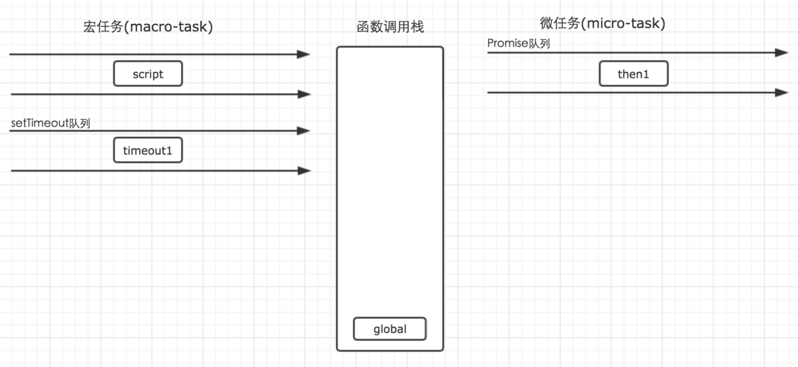
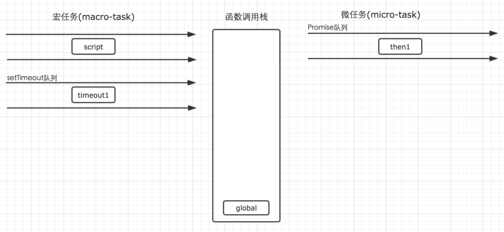

首先，事件循环从宏任务队列开始，这个时候，宏任务队列中，只有一个script(整体代码)任务。
每一个任务的执行顺序，都依靠函数调用栈来搞定，而当遇到任务源时，则会先分发任务到对应的队列中去，
所以，上面例子的第一步执行如下图所示。
第二步：script任务执行时首先遇到了setTimeout，setTimeout为一个宏任务源，那么他的作用就是将任务分发到它对应的队列中。
setTimeout(function() {
console.log('timeout1');
})
第三步：script执行时遇到Promise实例。
Promise构造函数中的第一个参数，是在new的时候执行，
因此不会进入任何其他的队列，而是直接在当前任务直接执行了，
而后续的.then则会被分发到micro-task的Promise队列中去。
因此，构造函数执行时，里面的参数进入函数调用栈执行。
for循环不会进入任何队列，因此代码会依次执行，所以这里的promise1和promise2会依次输出。
 

script任务继续往下执行，最后只有一句输出了globa1，然后，全局任务就执行完毕了。
第四步：第一个宏任务script执行完毕之后，就开始执行所有的可执行的微任务。
这个时候，微任务中，只有Promise队列中的一个任务then1，因此直接执行就行了，
执行结果输出then1，当然，他的执行，也是进入函数调用栈中执行的。
第五步：当所有的micro-tast执行完毕之后，表示第一轮的循环就结束了。
这个时候就得开始第二轮的循环。第二轮循环仍然从宏任务macro-task开始。

这个时候，我们发现宏任务中，只有在setTimeout队列中还要一个timeout1的任务等待执行。因此就直接执行即可。